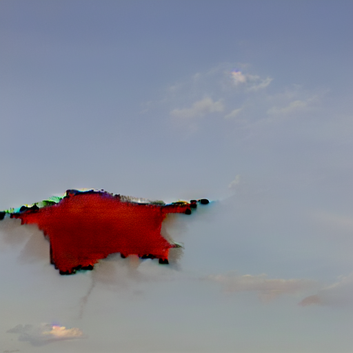
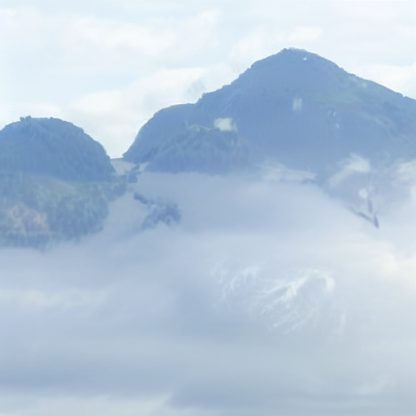
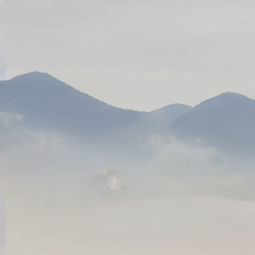
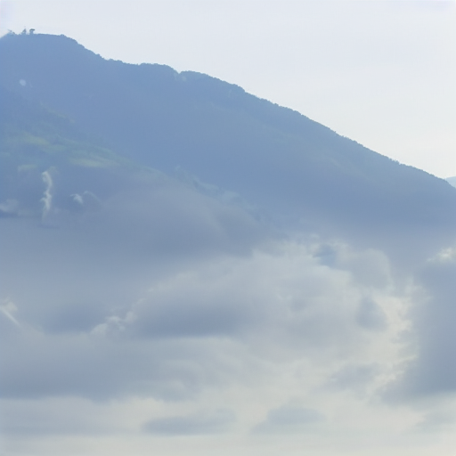
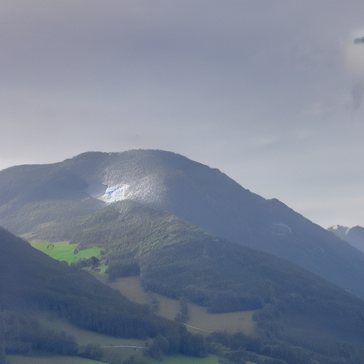

handbound book
When memory gets constructed, it feels real. But no matter how much we think it is a real place in the real world, it most likely isn't and it will never be.
Inspired by the accidental merging of memories from Austrian mountain ranges and Dutch skies, the project utilizes self trained stable diffusion models and hand painted pictures of fictional landscapes.
    